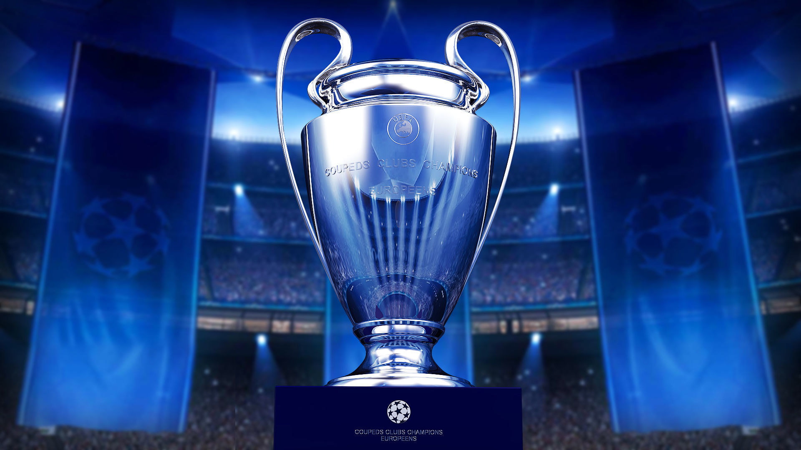

La CHAMPIONS
La UEFA CHAMPIONS LEAGUE, originariamente conocida como Copa de Europa, es el torneo internacional oficial de fútbol más prestigioso a nivel de clubes entre las competiciones organizadas por la Unión de Asociaciones Europeas de Fútbol (UEFA) y uno de los más reconocidos mundialmente.Fue creada por iniciativa del diario L'Équipe en la temporada 1955-56 bajo la denominación de Copa de Clubes Campeones Europeos (nombre original en francés, Coupe des Clubs Champions Européens), con un formato de eliminación directa. En 1992 el torneo fue reestructurado incluyendo por primera vez un formato de competición de liga o fase de grupos como paso previo a la fase eliminatoria, y así, es como se disputa en la actualidad.
